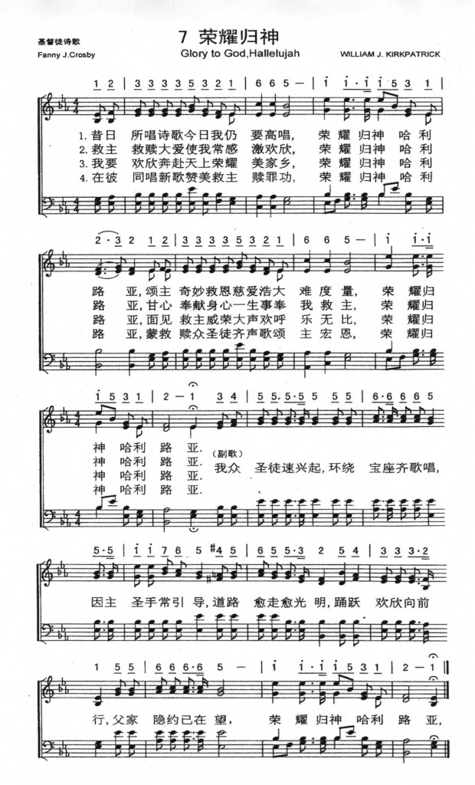

(請點耳機收聽)
(請點耳機收聽)利未人憑信心，勇敢地抬約櫃下水。 他們的信心榮耀神，成就大事工。
「榮耀歸於真神」是芬妮克羅斯比（Fanny J. Crosby, 見二月二日）寫於1875年，由杜恩譜曲。 1952年葛理翰佈道團在英國各地佈道，有一位牧師建議將這首詩歌編入佈道會歌集中，在倫敦佈道會中選唱這首詩後，深受信徒喜愛，以後，在整個月的聚會中，幾乎每晚大家要唱這首歌。
| 簡介 To God Be the Glory |
| This American gospel song became popular in England in the late 19th century, then returned to this country in the mid-20th century with the Billy Graham crusades. Its continuing popularity may well be due to the freedom from subjective considerations in its praise of God. |
To God be the glory, great things he hath done
|
詩集：生命聖詩，8 |
| 1 To God be the glory, great
things he hath done: so loved he the world that he gave us his son, who yielded his life an atonement for sin, and opened the lifegate that all may go in. Refrain: 2 Oh, perfect redemption, the purchase of blood, 3 Great things he hath taught us, |
榮耀歸於真神，祂成就大事， 為愛世人甚至賜下獨生子， 獻上祂生命為人贖罪受害， 永生門已大開，人人可進來。 救主流寶血，何等全備救恩， 真神應許賜給凡信祂的人； 罪人中之罪魁若真心相信， 一信靠主就必得赦罪之恩。 父神啟示真理，祂成就大事， 藉聖子耶穌我們歡欣無比， 將來見主面我們必更驚訝， 何等奇妙改變，更純潔無瑕。
|
|
 |
|
http://www.hymncompanions.org/Mar/28/stream.php
榮耀歸於真神，祂成就大事，為愛世人甚至賜下獨生子，
獻上祂生命為人贖罪受害，永生門已大開，人人可進來。
贖罪完全救恩，主寶血功勳，凡信者得永生，神應許世人；
只要我眾罪人真心接納主，一經信靠耶穌，必蒙祂饒恕。
榮耀歸於真神，祂成就大事，藉聖子耶穌我們得大歡喜；
至聖至尊榮我主耶穌基督，將來得見主面何等大恩福。
（副歌）
讚美主，讚美主，全地聽主聲音！
讚美主，讚美主，萬民快樂高興！
請來，藉主耶穌進入父家中，
榮耀歸主，祂已成就大事工。
(請點耳機收聽)
利未人憑信心，勇敢地抬約櫃下水。 他們的信心榮耀神，成就大事工。
「榮耀歸於真神」是芬妮克羅斯比（Fanny J. Crosby, 見二月二日）寫於1875年，由杜恩譜曲。
1952年葛理翰佈道團在英國各地佈道，有一位牧師建議將這首詩歌編入佈道會歌集中，在倫敦佈道會中選唱這首詩後，深受信徒喜愛，以後，在整個月的聚會中，幾乎每晚大家要唱這首歌。
他們回美國後，發現在舊版的詩集中早已有這首詩，但新編的聖詩集中卻刪去了這首詩歌，於是他們立即把它編入佈道詩選中。一首被人遺忘了的美國福音詩歌，由於英國人的熱愛，再次在世界各地流行起來。
本詩稍異於芬妮一貫以見証作詩的風格，全詩以讚美神為主題。曲調係杜恩（William H. Doane,見三月十一日）所譜，活潑明快。副歌中的兩個「讚美主」樂音高昂。第二個「讚美主」好像是第一個「讚美主」的回聲，充分表達讚美之意。
在芬妮的自傳中，她寫道：
『我的心靈何其快樂，雖我目已失明，
我仍堅決在這世上，作個知足的人；
許多幸福我能享受，他人無法得到，
我決不會因我目盲，痛苦悲嘆哀號！』
中英文聖詩集參考
英文歌名 To
God Be the Glory
頌主新歌 62
頌主新歌(中英雙語) 60
教會聖詩 243
生命聖詩 8
新聖詩 62
歡欣讚美 56
聖徒詩集 33
聖詩 9
讚美 4
恩頌聖歌 66
世紀讚頌 59
頌主聖詩 5
讚美詩(新編) 11
青年聖歌I 2
校園詩歌I 1
http://www.immanuel.net/cb/hymn/Hymn.asp?HymnID=41
芬妮克羅絲比
Fanny J.Crosby
榮耀歸於真神，祂成就大事，
為愛世人甚至賜下獨生子，
獻上祂生命為人贖罪受害，
永生門已大開，人人可進來。
(副歌)
讚美主，讚美主，全地聆聽主聲；
讚美主，讚美主，萬民快樂歡欣；
請來藉聖子耶穌來到父前，
榮耀歸主，祂已成就大事工。
To God be the glory, great things He hath done,
So loved He the world that He gave us His Son,
Who yielded His life an a tonement for sin,
And opened the jifegate that all may goin
(Refrain)
Praise the Lord, praise the Lord, Let the earth hear His voice!
Praise the Lord, praise the Lord, Let the people rejoice!
O come to the Father thro' Jesus the Son,
And give Him the glory; great things He hath done.
這首歌是由盲眼詩人--克羅絲比(Fanny J.Crosby,1820-1915)
所作,他出生於美國紐約普蘭鎮的一個窮苦家庭中,父母都是很虔誠的基督徒,在她生下來六個月時,因為感冒,以致眼睛發紅,碰巧醫生又不在家,只好請來另一位蒙古大夫來醫治,他給了一帖很熱的藥膏敷眼睛,沒想到後來眼睛全瞎了,鄰居們知道此事都非常氣憤,想找那位蒙古大夫理論算帳,可惜這位惹禍的大夫知道此事以後,就於半夜逃之夭夭,以後再也沒有人看到他。
可憐的克羅絲比不但眼睛失明,在他尚未滿一歲時,父親又不幸過世了,她母親因為事情實在是太忙了,便將她交給祖母來照顧,她的祖母是一位相當愛主的基督徒,常常告訴她神創造的一切是多麼美麗,並神的大愛.救贖的計畫.以及聖經的奇妙,都深深的影響她,所以克羅絲比很小就有重生的經驗,並且深深的經歷神的大愛,她沒有被環境打倒,反而比別人更加積極努力研究音樂和文學,並且她的記憶力極強,領悟力極高,能夠將聖經(尤其是詩篇及箴言)記住並可倒背如流。她雖然眼盲,但是心靈的眼睛卻是極其明亮,從她的聖詩作品當中對大自然的描述,真不敢相信她居然是位眼盲者。她曾進入盲童學校接受教育,且後來也任教於該校,繼而與同是盲眼的樂師--阿爾斯丁(Alstyne)結婚,而且終身以大半時間來服務盲童。她的第一首被全球所喜愛的聖詩,就是這首"榮耀歸與上帝",她平均每週作詩三首,每年作品一百多首,在世數十年以來,所遺留下來家喻戶曉的聖詩共有八千多首,
生命聖詩中有編入的另外有第80; 171; 193; 206; 254; 262; 280; 298; 313; 343; 366; 367; 370; 379; 414; 432; 473等首。
https://hymnary.org/text/to_god_be_the_glory_great_things_he_hath
This text is unique from Crosby’s other hymns because, rather than focus on our experience of God, the words are wholly about God and His perfect glory. In a sense, the hymn perfectly displaces us, removing us from the pedestal on which we so often place ourselves. This displacement is one of the great paradoxes of the Christian faith. It feels very natural for us to seek attention, approval, and our own glory. We like to be in control and present our own image to the world, an image we seek to improve through any means possible. On the other hand, there is great comfort in knowing that the image we try to make for ourselves doesn’t matter. We are made in the image of God, which means that whatever we do has to bring Him and Him alone glory. Our lives are wrapped up in God, and so too are the mistakes we make, the wounds we inflict, and all of our shortcomings. These are the things we try to avoid while we maintain control of our lives. But what a joy and a comfort to know that though these things may happen, because God is ultimately in control, and because our own image does not matter, God is still glorified. While we should still try to live a holy and upright life, we should do so to bring God glory, not ourselves. What a beautiful freedom that is.
This text by Fanny Crosby was first published in William H. Doane’s collection, Songs of Devotion, in 1870. Most hymnals contain the original three verses and chorus, though the Presbyterian Hymnal doesn’t include the original second verse, and Rejoice in the Lord doesn’t include the refrain. Some hymnals add the chorus as an extension of each verse. The words and phrasing are slightly different in each hymnal. Be sure to note the last line of the third stanza, in which Crosby, blind from birth, writes, “But purer, and higher, and greater will be my wonder, my transport, when Jesus we see.”
The tune TO GOD BE THE GLORY was written by William Doane, first appearing in Doane’s Songs of Devotion in 1870. This tune is almost exclusively used with this hymn. Be sure to sing this tune at a lively and joyful tempo. Because the chorus feels like an extension of each verse, it isn’t necessary to change the dynamics between the two. However, it could be quite powerful to end with an a cappella chorus at the very end.
This hymn could be sung during any time of praise, such as the opening hymns, a response of gratitude to either the assurance or the sermon, or a closing hymn. There are a vast number of songs it could be paired with, such as “Glorious and Mighty,” “He is Exalted,” “Holy, Holy, Holy,” or “Praise to the Lord, the Almighty.” As an introduction to the song, and a connection between the words we speak and words we sing, you could read the Westminster Shorter Catechism Q & A 1: “What is the chief end of man? To glorify God, and to enjoy him forever.”
Scripture References:
st. 1 = Ps. 126:2-3, John 3:16, 1 John 2:2, Matt. 7:13-14
ref. = John 14:6
Prodigious writer of hymn texts, Fanny J. Crosby (b. Putnam County, NY, 1820; d. Bridgeport, CT, 1915) wrote this hymn, which was first published with Doane's tune in Songs of Devotion (1870). This text and "Blessed Assurance" (490) are among the best-known and most-loved hymn texts of the thousands Crosby produced. Initially ignored in the United States, the hymn was sung in British churches after its inclusion in Ira D. Sankey's Sacred Songs and Solos (1903). Because of its use in the Billy Graham Crusades beginning in 1954, the hymn gained great popularity in Britain and Australia as well as in the United States.
In contrast to many gospel hymns (including the majority of Crosby's texts), “To God Be the Glory” directs our attention away from personal experience to the glory of God. God so loved the world that he gave us his Son to make atonement for sin (st. 1); all who believe in Christ will receive pardon (st. 2) and will rejoice now and through all eternity because of the "great things he has done" (st. 3). The refrain borrows its praise in part from the Old Testament psalms. The phrase "when Jesus we see" (st. 3) must have meant something special to Crosby, who was blinded when she was seven weeks old.
Fanny (Francis) Jane Crosby attended the New York City School for the Blind, where she later became a teacher. She began writing poetry when she was eight and publishing several volumes, such as A Blind Girl, and Other Poems (1844). Married to musician Alexander Van Alstyne, who was also blind, Crosby began writing hymn texts when she was in her forties. She published at least eight thousand hymns (some under various pseudonyms; see PHH 427); at times she was under contract to her publisher to write three hymns a week and often wrote six or seven a day. Crosby's texts were set to music by prominent gospel song composers such as William B. Bradbury (PHH 114), William H. Doane, Robert S. Lowry (PHH 396), Ira D. Sankey (PHH 73), and William J. Kirkpatrick (PHH 188). Her hymns were distributed widely and popularized at evangelistic services in both America and Great Britain. Crosby was one of the most respected women of her era and the friend of many prominent persons, including presidents of the United States.
Liturgical Use:
Suitable for many worship services as a superb hymn of praise for God's
mighty acts of redemption in Christ; baptism; profession of faith; assurance
of pardon.
--Psalter Hymnal Handbook
https://www.umcdiscipleship.org/resources/history-of-hymns-to-god-be-the-glory1
"To God Be the Glory"
Fanny J. Crosby
The United Methodist Hymnal, No. 98
Fanny J. Crosby
Praise the Lord, praise the Lord,
let the earth hear his voice!
Praise the Lord, praise the Lord,
let the people rejoice!
O come to the Father through Jesus the Son,
and give him the glory, great things he hath done.
How hymns travel throughout space and time is fascinating. “To God be the glory”
was included in William Doane’s Songs of Devotion in 1870, indicating that it
was written at least five years earlier than the 1875 date that is usually
cited.
Ira Sankey probably saw the hymn in Doane’s collection and incorporated it into
the first edition of his Sacred Songs and Solos (1875). Dwight Moody and Ira
Sankey helped to establish the hymn’s popularity during their revivals in Great
Britain in the late 19th century. It also appeared in some British hymnals
including the Methodist Hymn Book (1933).
However, it was not until the 1954 Billy Graham Crusade in Nashville that Cliff
Barrows introduced this song to congregations in the United States. Mr. Graham
and Mr. Barrows had learned the song during the 1952 revivals they had conducted
in Great Britain.
A hymn's journey
Hymnologist William J. Reynolds, writing in his hymnal companion Hymns of Faith
(1964), documented the return of this hymn to the USA: “It is most extraordinary
that this long-forgotten American gospel song should have been imported from
England and become immensely popular during the last decade.”
Frances Jane Crosby’s hymns have historically been among the most popular songs
sung by Methodists. Crosby (1820-1915), who became blind as an infant, was a
lifelong Methodist.
She began composing hymns at age 6, became a student at the New York Institute
of the Blind at 15 and joined the faculty of the Institute at 22, teaching
rhetoric and history. Her hymn texts were staples for the music of the most
prominent gospel songwriters of her day.
In this hymn, the primary focus of God’s actions is on the redemption of
humanity through Jesus Christ. The second line of the first stanza, “So
loved he the world that he gave us his Son,” echoes John 3:16.
The second stanza, though referring to “the promise of God,” centers on
Christ, the “perfect redemption, the purchase of blood.” In the third stanza,
the pronoun “he” is somewhat vague in its reference: Is “he” referring to God or
to Jesus? The focus is again on Christ who is “our wonder [and] our transport,”
and the one that we long to see in glory.
Blurred lines
Theologically, the author blurs the actions of the Father and the work of the
Son. The concluding phrase of the refrain contributes to this: “O come to the
Father through Jesus the Son, and give him the glory, great things he hath
done.”
Perhaps this may seem like a trivial point. But this is likely an indication of
the supremacy of Christ in the theology of evangelicals in the late 19th and
early 20th century—and indeed to this day.
Few gospel songs express gratitude to God as creator of the universe or to God’s
providence in our lives. For evangelicals, God’s primary role is often found in
the gift of Jesus Christ, the redeemer of the world and God’s greatest gift to
humanity—the thesis of John 3:16.
Dr. Hawn is professor of sacred music at Perkins School of Theology.
https://www.hymnologyarchive.com/to-god-be-the-glory
I. Origins
This hymn by Fanny Crosby (1820–1915) was first printed in Brightest and Best (Chicago: Biglow & Main, 1875 | Fig. 1). The tune is by one of her long-time collaborators, William H. Doane (1832–1915), and is known simply as TO GOD BE THE GLORY.
Fig. 1. Brightest and Best (Chicago: Biglow & Main, 1875).
The exact circumstances of the composition of this hymn are not known, but Fanny Crosby did give some insight into her creative process in her autobiography, Memories of Eighty Years (1906):
In composing hymn-poems there are several ways of working. Often subjects are given to me to which melodies must be adapted. At other times the melody is played for me and I think of various subjects appropriate to the music. In a successful song, words and music must harmonize, not only in number of syllables, but in subject matter and especially accent. In nine cases out of ten, the success of a hymn depends directly upon these qualities. Thus, melodies tell their own tale, and it is the purpose of the poet to interpret this musical story into language.[1]
II. Analysis
Crosby met Doane for the first time in 1867 in New York (Memories, pp. 123–125), and by that time, Crosby was already a coveted lyricist. In this case, either the words or the melody could have been written first—she worked both ways—but they do “harmonize,” as she says, very well together. The tune has a stately, grand quality. The refrain, “Praise the Lord,” evokes a fanfare fit for a King.
The text follows suit. The opening lines have a creedal quality and a clear statement of the means of salvation, which might be significant factors in the hymn’s widespread adoption. In the first stanza, the “life gate” is possibly an allusion to the narrow gate in Matthew 7:13–14. The third stanza appeals directly to the grandeur of the tune by imagining a heavenly scene, one which is “purer, and higher, and greater.” The refrain is a planet-wide call to worship. When it says, “come to the Father through Jesus the Son,” it is also appealing to Jesus’ claim in John 14:6, “I am the way, and the truth, and the life. No one comes to the Father except through me.”
Literary scholar Leland Ryken saw the hymn as part of a noble tradition of ascribing glory to God:
First Corinthians 10:31 expresses the principle in kernel form: “So, whether you eat or drink, or whatever you do, do all to the glory of God.” The answer to the first question in the Westminster Shorter Catechism is “Man’s chief end is to glorify God and to enjoy him forever.” Johann Sebastian Bach’s signature sign-off on all his religious compositions was the Latin motto Soli Deo Gloria: to God alone be the glory. Crosby’s famous hymn fits right into this mainstream of Christian experience. The focus of the poem is specifically the glory that God merits for his redemptive work in Christ.[2]
Connoisseurs of Crosby’s hymns often point out how this text differs from many of her other texts insofar as it is not a message of personal testimony; rather, it has a more didactic, theological quality. As Carl Daw has explained, rather than being a song of subjective experience, “this is a remarkably objective celebration of God’s saving work in Jesus Christ.”[3]
III. Legacy
By some accounts, the hymn was not immediately popular or well known in the United States. It was not included, for example, in the American Gospel Hymns series (1875–1894) by Ira Sankey, but it was included in the corresponding British series Sacred Songs and Solos (1873–), starting with Sacred Songs and Solos No. 2. Thus the hymn seems to have had a little more currency in the U.K. than in the U.S., at least initially. It enjoyed a resurgence in the mid 20th century, owing to its prominent use in the crusades of Billy Graham. Cliff Barrows, in Crusade Hymn Stories (1967), explained his involvement:
In Great Britain, this same hymn never faded into oblivion as it did in the United States. I heard it sung there in 1952 during one of our early visits. Later, it was suggested for inclusion in the songbook we were compiling for the London crusade of 1954. Because of its strong text of praise and its attractive melody, I agreed. We introduced the hymn during the early days of those meetings in Harringay Arena. As a result, Billy Graham asked that we repeat it often because he was impressed with the enthusiastic participation of the audience. In the closing weeks of the crusade, it became our theme hymn, repeated almost every night. The words well expressed our praise to God, who was doing wondrous things in Britain. Returning to America, we brought the hymn with us and used it first in the Nashville, Tennessee crusade of August 1954. . . .
Of all the songs that have been popularized through crusade activity, we are most happy about this one. Its testimony should rebound in the heart of every Christian; every area of a person’s life should reflect this witness, “To God be the glory.”[4]
by CHRIS FENNER
for Hymnology Storage
19 September 2018
rev. 21 April 2020
Fanny Crosby, Memories of Eighty Years (Boston: James H. Earle, 1906), pp. 167–168: Archive.org
Leland Ryken, “To God be the glory,” 40 Favorite Hymns on the Christian Life (Phillipsburg, NJ: P&R, 2019), pp. 128–129.
Carl P. Daw Jr., “To God be the glory,” Glory to God: A Companion (Louisville: Westminster John Knox, 2016), p. 602.
Cliff Barrows, “To God be the glory,” Crusade Hymn Stories (Chicago: Hope, 1967), pp. 93–94.
Cliff Barrows, “To God be the glory,” Crusade Hymn Stories (Chicago: Hope, 1967), pp. 93–94.
Hugh T. McElrath, “To God be the glory,” Handbook to the Baptist Hymnal (Nashville: Convention Press, 1992), p. 259.
Bert Polman, “To God be the glory,” Psalter Hymnal Handbook (Grand Rapids: CRC, 1998), pp. 640–641.
Robert Cottrill, “To God be the glory,” Wordwise Hymns (19 October 2011): https://wordwisehymns.com/2011/10/19/to-god-be-the-glory/
Carl P. Daw Jr., “To God be the glory,” Glory to God: A Companion (Louisville: Westminster John Knox, 2016), p. 602.
Leland Ryken, “To God be the glory,” 40 Favorite Hymns on the Christian Life (Phillipsburg, NJ: P&R, 2019), pp. 128–129.
“To God be the glory,” Hymnary.org:
https://hymnary.org/text/to_god_be_the_glory_great_things_he_hath
https://zh.wikipedia.org/wiki/%E8%8A%AC%E5%B0%BC%C2%B7%E5%85%8B%E7%BD%97%E6%96%AF%E8%B4%9D
| 芬尼·克羅斯貝 | |
|---|---|
 |
|
| 幕後 | |
| 出生 | Frances Jane
Crosby 1820年3月24日 |
| 逝世 | 1915年2月12日（94歲） |
| 職業 | 作詞者、詩人、作曲家 |
| 音樂類型 | 讚美詩、福音音樂 |
| 演奏樂器 | 鋼琴、豎琴、吉他、管風琴 |
| 出道地點 | 紐約市 |
| 活躍年代 | 1844年–1915年 |
| 相關團體 | George F. Root William B. Bradbury William Howard Doane Robert Lowry Philip Phillips Phoebe Palmer Knapp Ira D. Sankey George C. Stebbins William J. Kirkpatrick Hubert P. Main Philip P. Bliss Silas Jones Vail William Fiske Sherwin Hart Pease Danks John R. Sweney |
范妮·克羅斯比，又譯芬尼·克羅斯貝（Frances Jane Crosby，又名Fanny Crosby，1820年3月24日－1915年2月12日）是一位知名的基督教讚美詩歌詞作者。美國人。她是歷史上最多產的讚美詩作者之一，從幼年起共寫了超過8,000首讚美詩，儘管她是一位盲人。在她活著的時候，范妮·克羅斯比是美國最知名的婦女之一。
直到今天，絕大多數的美國讚美詩集都收入她的作品。她最著名的一些歌曲包括「有福的確據，基督屬我"（Blessed Assurance） [1]、「耶穌發慈聲要召你回來（Jesus Is Tenderly Calling You Home）」 [2]、「這個真是何等甘美的故事」（Praise Him, Praise Him）[3]和「榮耀歸於父神（To God be the Glory）」[4]。一些出版商不願在詩集中收入同一位作者太多的作品，克羅斯比在她一生中使用將近100個不同的筆名。
范妮·克羅斯比出生在美國紐約州普蘭縣的東南小鎮一個貧窮的家庭，父母是約翰和默西。在6周時，她因感冒引起眼睛發炎，家庭負擔不起進醫院的費用，一個上門的庸醫推薦用熱的膏藥治療，而這弄壞了范妮的眼睛。但范妮在她的自傳中說：『那位大夫知道後便逃之夭夭，....但我活到現在，從來就沒有一刻恨過那位大夫，因我一直知道，慈愛的神，曾藉祂無限的慈愛與奇妙的旨意，....使我還能有機會事奉祂』
他的父親在她一歲時就去世了，因此她是由母親和祖母撫養長大。她們用基督教原則教育克羅斯比，例如，要求她記住大段的聖經。克羅斯比成為紐約市聖約翰衛理公會教堂的活躍成員。
15歲時，克羅斯比被紐約盲人學校（今紐約特殊教育學校）錄取。她在那裡共7年時間，在這期間她學習鋼琴、吉他和歌唱。在1843年，她加入了華盛頓的遊說者行列，爭取對盲人教育的支持。從1847年到1858年，克羅斯比在紐約的學校里教英文和歷史。1858年，她嫁給一個盲人音樂教師亞歷山大（Alexander Van Alstyne）。由於丈夫的堅持，她繼續使用她的婚前姓氏。他們有一個女兒弗蘭西斯，在幼年就夭折了。亞歷山大也在1902年7月19日去世。
克羅斯比8歲時大家就發現她寫詩。她第一部出版作品是一個盲人女孩的詩歌（1844年），接著又出版了蒙特雷的詩歌 （1853年）和哥倫比亞的花環（1858年）。
克羅斯比從不抱怨她的殘疾。在8歲時她對自己的狀況寫下了這些詩句:
1863年，克羅斯比創作了她的第一首讚美詩「這是馬其頓的呼聲」。後來，她為包括菲利普·菲利普斯、杜安博士（W. H. Doane）、桑基（Ira D. Sankey）等許多作曲家譜寫歌詞。在她去世之前，至少寫過8,000首讚美詩。
克羅斯比當時非常出名，經常受到美國總統的接見。在1885年，她在尤里西斯·辛普森·格蘭特總統的葬禮上演唱讚美詩「安穩在耶穌手臂（Safe in the Arms of Jesus）」。
當她去世時，她的墓碑上寫著「范妮阿姨」和「有福的確據，基督屬我。預嘗神榮耀，何等快活！」 。以利莎用這首詩紀念范妮：
克羅斯比安葬在康乃狄克州的布里奇波特。1975年進入福音音樂名人廳。